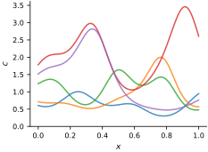
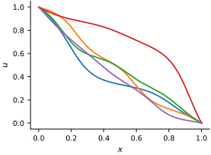
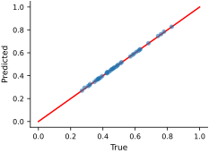
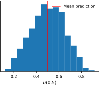

Example: Surrogate for the Stochastic Heat Equation#
Deterministic, physical model#
Consider the steady state heat equation on a heterogeneous rod (1D) with no heat sources:
and boundary values:
The thermal conductivity \(c\) lives in some function space \(\mathcal{C},\) and the temperature \(u\) lives in a function space \(\mathcal{U}\). Let \(F: \mathcal{C} \rightarrow \mathcal{U}\) be the solver for the boundary value problem, i.e., \(u = F(c)\). Suppose we are uncertain about the thermal conductivity, \(c(x)\), and we want to propagate this uncertainty to the temperature field, \(u(x)\).
Uncertain thermal conductivity#
Before we proceed, we need to put together all our prior beliefs and come up with a stochastic model for \(c(x)\) that represents our uncertainty. This requires assigning a probability measure on the function space \(\mathcal{C}\). Let’s say the conductivity \(c\) is given by
where \(c_0\) is the reference (pointwise median) thermal conductivity and \(g\) follows a zero-mean Gaussian process, i.e.,
Finally, let \(k\) be the squared-exponential kernel. Let’s implement the Karhunen–Loève expansion of the random field \(g\) and the resulting conductivity \(c\):
k = 0.5*kernels.ExpSquared(scale=0.1)
kle = build_kle(k, nq=1000, alpha=0.95, input_dim=1)
def c(x, xi):
"""Compute the random thermal conductivity field for a given xi."""
return jnp.exp(kle(x, xi))
array([<Axes: xlabel='$x$', ylabel='$c$'>], dtype=object)

Reduce dimensionality of the stochastic model input#
Suppose we are interested the temperature at the center of the rod, i.e., at \(x = 0.5\). Our model is therefore
The quantity of interest \(u_{0.5}\) is stochastic because the thermal conductivity \(c\) is stochastic. To quantify uncertainty in \(u_{0.5}\), replace \(c\) with its truncated Karhunen–Loève expansion \(\hat{c}\):
The infinite-dimensional uncertainty propagation problem has now been reduced to a finite one! This is extremely useful. For example, to sample \(u_{0.5}\), we can simply follow these steps:
Sample \(\xi \sim \mathcal{N}(0, I)\).
Evaluate \(\hat{c}(\xi)\), the truncated Karhunen–Loève expansion at \(\xi\). The result is a sample of the conductivity field \(c.\)
Numerically solve the deterministic heat equation with \(c\) for time \(t=0.5\). The result is a sample of \(u_{0.5}\).
Let’s visualize a few samples of the entire temperature field \(u(x)\).
First, we need the solver \(F\). We use the finite-volume method (Eymard et al., 2000) as implemented in FiPy. Here is the solver:
solver = SteadyStateHeat1DSolver(c=c, nx=500)
Now let’s (approximately) sample \(u\):
array([<Axes: xlabel='$x$', ylabel='$u$'>], dtype=object)

Surrogate for the stochastic model#
Uncertainty propagation can still be slow, depending on how fast the solver \(F\) is. To speed it up, we will build a Gaussian process surrogate for \(\hat{u}_{0.5}(\xi)\). This GP will take the coefficients \(\xi\) as inputs and will output the quantity of interest \(\hat{u}_{0.5}\).
First, we need some training data. We’ll generate data by solving the governing heat equation for many different samples of thermal conductivity.
xis = []
u05s = []
for i in range(200):
key, key_xi = jr.split(key)
xi = jr.normal(key_xi, shape=(kle.num_xi,))
x, y = solver(xi)
xis.append(xi)
u05s.append(y[x==0.5][0])
xis = jnp.stack(xis, axis=0)
u05s = jnp.array(u05s)
from sklearn.model_selection import train_test_split
key, key_split = jr.split(key)
xi_train, xi_test, u05_train, u05_test = train_test_split(xis, u05s, test_size=0.2, random_state=int(jr.randint(key_split, shape=(), minval=0, maxval=1e6)))
Now let’s train the surrogate:
init_params = {
'log_amplitude': 1.0,
'log_lengthscale': -jnp.ones(xis.shape[1]), # Different lengthscale for each input dimension
}
key, subkey = jr.split(key)
optimized_params, _ = train_gp(
init_params,
X=xi_train,
y=u05_train,
num_iters=1000,
learning_rate=1e-2,
batch_size=100,
key=subkey
)
Let’s evaluate the fit on some test points:
optimized_gp = build_gp(optimized_params, xi_train)
u05_pred_test_mean, u05_pred_test_var = optimized_gp.predict(y=u05_train, X_test=xi_test, return_var=True)
array([<Axes: xlabel='True', ylabel='Predicted'>], dtype=object)

The fit looks good.
Uncertainty propagation#
We can now use the surrogate to do uncertainty quantification tasks very cheaply!
For example, let’s visualize the distribution of \(u_{0.5}\):
xi = jr.normal(key, shape=(2000, kle.num_xi,))
u05 = optimized_gp.predict(y=u05_train, X_test=xi)
array([<Axes: xlabel='$u(0.5)$'>], dtype=object)
